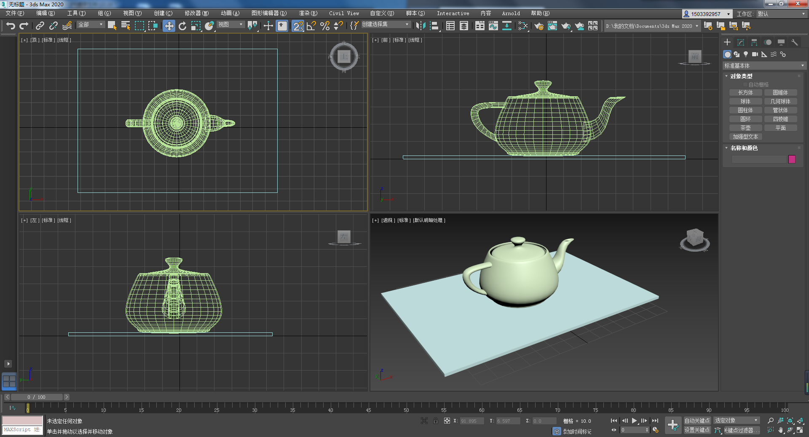
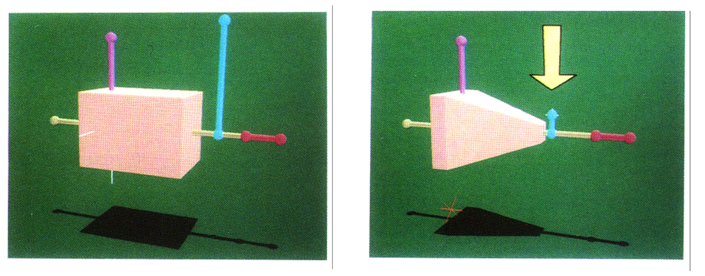
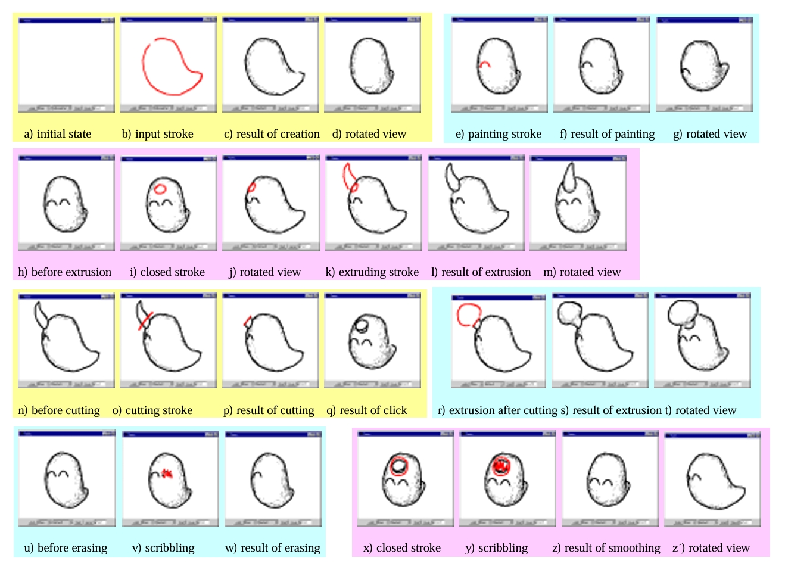
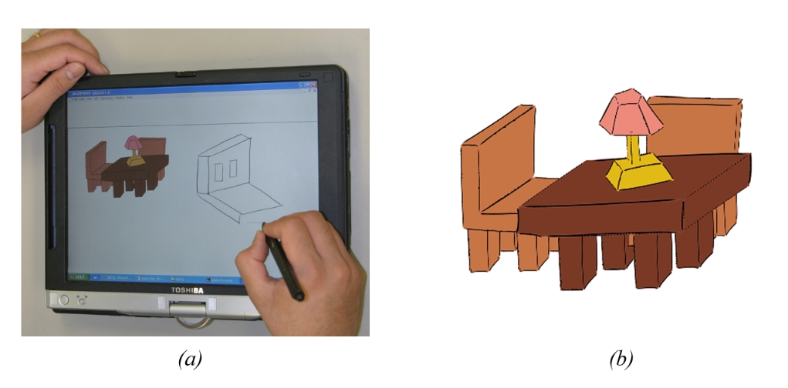
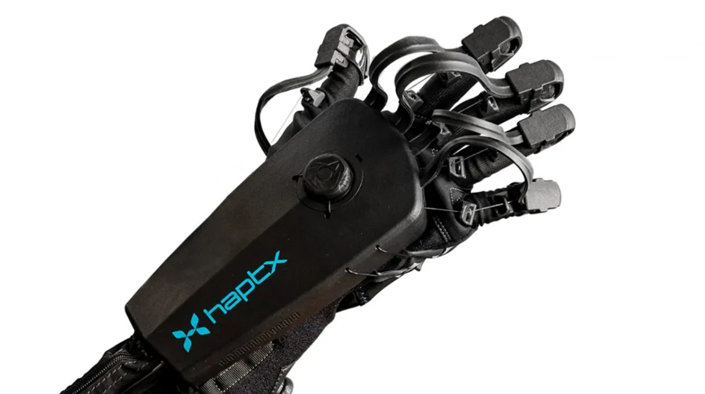
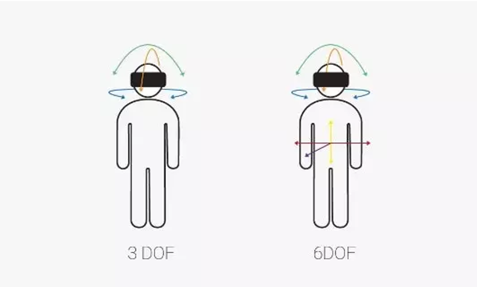
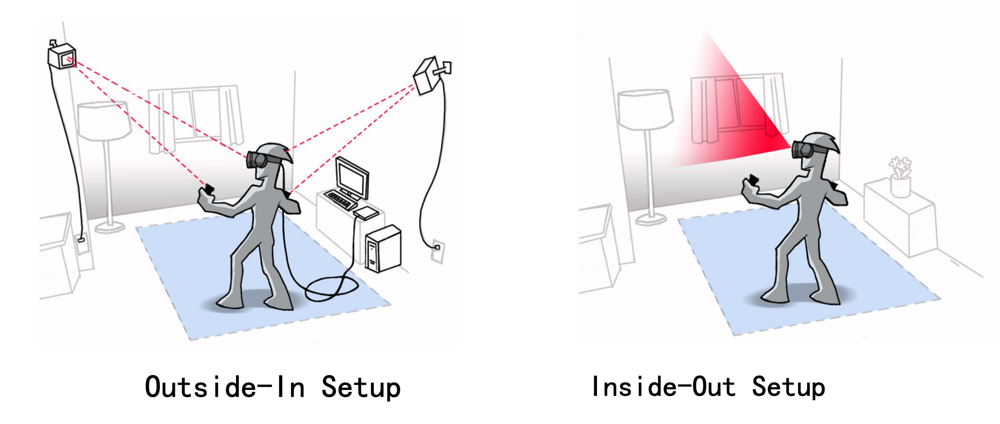
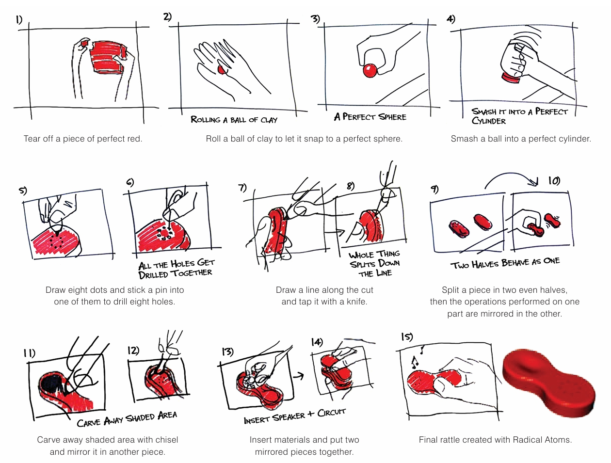
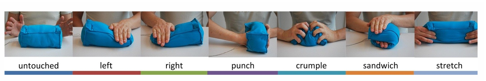

29.1. 多通道用户输入#
29.1.1. 基于经典交互技术的三维交互#

图 29.1 3D Max中的三视图 © From zhuanlan.zhihu.com#
经典交互技术依赖于二维屏幕进行显示，基于这类技术的三维交互的主题挑战在于如何将二维的输入输出同三维空间建立联系。经典的方法基于多视图，如图 29.1，常见于各种三维建模软件，这一类方法往往建立四个视图窗口，由三维对象的三视图和一个来自用户控制的自由视角主视图组成。当用户需要对物体进行三维变换时，主视图可以进行六自由度的三维变换，而三视图的每个视角可以进行相应视角下的四自由度二维变换，这有效地缓解了视角遮蔽和三维变换自由度高的问题。
另一类方法(Snibbe et al. [SHR+92])则将二维中的控制杆(handle)扩展到三维，如图 29.2 所示。这一类方法往往不依赖多角度视图，提供了更加自然的交互方式。

图 29.2 3D控制杆：左图所示的标准长方体上具有一系列可交互的三维控制杆，右图展示了缩短蓝色控制杆后因此变形的三维物体。#
除了上述鼠标操作的经典方法外，也有一些方法允许用户使用触控笔草绘来进行三维交互，如图 29.3 (Igarashi et al. [IMT99])和图 29.4 (Shesh et al. [SC04])

图 29.3 Teddy：一个3D自由形式设计的草图界面。#

图 29.4 一个交互式且用户友好的素描系统。#
29.1.2. 用户位置与姿态估计（User Position and Pose Estimation）#
在虚拟现实（VR）技术中，用户位置和姿态的精确估计是实现高质量沉浸式体验的核心。
早期的三维空间定位设备包括空间跟踪定位器（或三维空间传感器）和数据手套(Data Glove)。
空间跟踪定位器（或三维空间传感器）是指一类定位于身体或虚拟现实交互道具上的设备，往往是一个小型的芯片，能够感知空间6自由度及其变化，跟踪运动。空间跟踪定位存在低频磁场式和超声式传感器等不同类型，采用磁场或超声来计算设备在三维空间中的运动状态。
数据手套则是一种穿戴设备，通过其上的传感器可以精确的捕捉手指和手腕的相对运动，获取各种手势信号，并且可以配合一个六自由度的跟踪器，跟踪手的实际位置和方向。
{kind=link}

图 29.5 数据手套 © Haptx#
这里，自由度（Degrees of Freedom, DoF）指的是能够独立自由运动的参数的数目，一般设备的自由度有两种常用配置：
3度自由度（3-DoF）：此配置允许用户的头部在三个轴（俯仰、偏航、翻滚）上旋转，适合于静态体验，如观看虚拟现实影片或进行简单的查看任务。
6度自由度（6-DoF）：除了3-DoF提供的头部旋转外，6-DoF还支持用户在空间中的前后、左右、上下移动，极大增强了交互性和沉浸感，允许用户在虚拟世界中自由行走和探索。
{kind=link}

图 29.6 自由度（DoF）示意图。#

图 29.7 追踪技术。#
对用户进行空间定位需要用到追踪技术，追踪技术可以分为以下两类：
外部引导（Outside-In）追踪：
技术实现：通过设置在环境中的外部传感器（通常是摄像头或红外传感器），捕捉穿戴设备上的特定标记或特征点，实现对用户动作的精确追踪。
优点：提供高精度和低延迟的追踪，非常适合需要精确用户互动的高端VR应用。
缺点：安装复杂，成本较高，且用户的活动范围受到传感器覆盖区域的限制。
内部引导（Inside-Out）追踪：
技术实现：通过在头显本身安装相机和传感器，直接捕捉外部环境的图像及特征点来确定位置和姿态。
优点：安装简便，成本较低，使得VR设备更加便携和易于普及。
缺点：在特征缺乏的环境中可能出现追踪问题，精度和稳定性略逊于外部引导。 这两类技术也可以结合起来使用。视觉惯性测距（Visual-Inertial Odometry, VIO）是一种数据融合技术，它结合使用相机（视觉）和惯性测量单元（IMU）数据，通过算法融合技术提高追踪的精确度和鲁棒性。VIO技术可以在动态环境下快速响应用户的运动，提供连贯和平滑的用户体验。
具体算法与应用：
PnP问题的算法应用：解决位置和姿态估计的PnP问题是计算机视觉中的一个经典问题，常见的解决方法包括Grunert的方法，它可以通过解析方式求解相机的位置和姿态。
RANSAC算法：用于处理可能存在的噪声和异常值，通过迭代的方式选择数据中最佳的子集来拟合模型，提高估计的准确性和鲁棒性。
29.1.3. 手势识别#
29.1.4. 眼动追踪#
29.1.5. 语音识别#
29.1.6. 表情识别#
29.1.7. 其它输入通道#
29.1.7.1. 触觉和力反馈器#
触觉和力反馈器是一类模拟现实世界中触感和反作用力的设备，包括力学反馈手套、力学反馈操纵杆、力学反馈笔、力学反馈表面等装置。这一类设备希望使用户感觉到仿佛真的摸到了物体，主要通过视觉、气压感、振动触觉、电子触觉和神经肌肉模拟等方法实现。其中，电子触觉反馈器是向皮肤反馈宽度和频率可变的电脉冲，而神经肌肉模拟反馈是直接刺激皮层，这些方法都很不安全；较安全的方法是气压式和振动触感式的反馈器。然而，人的触觉非常敏感，精度一般的装置无法满足要求；对于触觉和力反馈器，还要考虑到模拟力的真实性、施加到人手上是否安全以及装置是否便于携带并让用户感到舒适等问题。由于精度、真实感、安全性等上述问题，目前这一类设备尚缺乏成熟产品。
29.1.7.2. 实体用户界面(Tangible User Interface, TUI)#
实体用户界面是一种用户通过物理环境与数字信息互动的界面，最初称做可抓取用户界面(Graspable User Interface)。开发实体用户界面的目的是通过赋予数字信息物理形态，从而增强协作、学习和设计，利用人类抓取和操作物理对象与材料的能力。实体用户界面的先驱是在麻省理工学院(MIT) Media Lab带领实体媒体小组(Tangible Media Group)的教授Hiroshi Ishii。他和Brygg Ullmer在1997年提出了对实体UI的愿景 [IU97]，称为Tangible Bits，旨在给数字信息赋予物理形态，使比特直接可操控和感知，追求物理对象与虚拟数据之间的无缝结合。他们描述了实体用户界面关于物理表现(Physical Representation)和交互控制的几点准则：
物理表现与底层数字信息计算耦合
物理表现体现交互控制的机制
物理表现在感知上与数字表现耦合
实体的物理状态体现系统数字状态的关键方面
在2012年，Hiroshi Ishii发表了关于实体用户界面的综述论文 [ILBL12]，提出：“实体设计需要在物理世界的不同材料和形态中精心设计界面，寻求不同属性的融合。”他提出了一种实体用户界面的新范式，在未来我们可以直接操作物理世界的实体，在其上施加的变换与各种操作都能对应到数字世界，如图 29.8 展示了直接操作实体界面来制作一个正红色外壳的过程。

图 29.8 Radical Atoms#
实体用户界面的另一个典型例子可以参见Karen Vanderloock提出的Skweezee系统 [VVASG13]，他们通过在实体设备上定义了标准的交互操作来使得用户可以通过直接的物理实体实现交互控制。图 29.9展示了Skweezee中一种设备(cuboid)的七种标准交互操作。

图 29.9 Skweezee: cuboid#
29.1.7.3. 物理控件(Physical Widgets)#
物理控件（Physical Widgets或Phidgets）是一类具有物理实体的可重用的交互设备。与Skweezee系统这样的TUI技术不同的是，物理控件往往是固定在桌面的交互设备，例如各种压力、温度的传感器控件，允许用户通过物理交互来传递控制信号。物理控件的设置初衷在于提供一种便捷、低成本的方式来让计算机能够方便地获得与现实世界进行物理交互的能力。物理控件往往统一为USB接口，使用时只需要连接到计算机设备上，随后通过特定的驱动程序来处理数字输入输出。